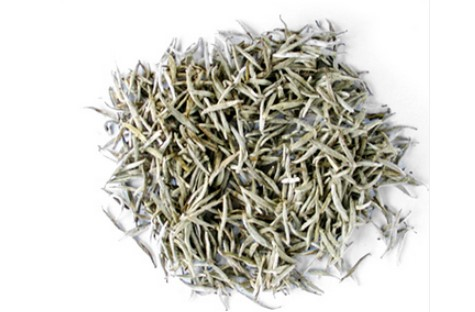
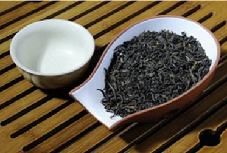

云南一起发财自动泡茶机科技责任有限公司
7战7捷！TA们都是“夜空中最亮的星”
图文创意引擎ARKIE参与人民网内容科技大赛长三角决赛路演
全面机考，人工智能准备好了吗？
南京光蓝物联网参与人民网内容科技大赛长三角赛区决赛路演
马栏山论“剑”丨字节跳动张羽：运用平台资源为公益赋能
红茶:
白茶:
绿茶:
乌龙茶:
黑茶:
黄茶:
云南一起发财自动泡茶机科技责任有限公司
7战7捷！TA们都是“夜空中最亮的星”
图文创意引擎ARKIE参与人民网内容科技大赛长三角决赛路演
全面机考，人工智能准备好了吗？
南京光蓝物联网参与人民网内容科技大赛长三角赛区决赛路演
马栏山论“剑”丨字节跳动张羽：运用平台资源为公益赋能
红茶:
红茶分为祁门红茶、大吉岭红茶、乌巴、阿萨姆红茶等等，具有养胃、抗癌、抗衰老等功效。白茶:
白茶因为全身多白毫而得名。白茶包括白毫银针、寿眉、白牡丹等；具有防癌、抗癌、防暑、解毒、治牙痛等功效。 绿茶:
绿茶包含碧螺春、六安瓜片、龙井等，具有防癌、降脂、减肥等功效。乌龙茶:
乌龙茶包含铁观音、武夷岩茶、白毫乌龙茶等，与绿茶最大的区别在于有没有经过发酵这个过程，采摘的茶叶和采摘的方法恒讲究。黑茶:
黑茶是利用微生物发酵以及湿热作用的方式制成的一种茶叶，他的出现距金已经有四百多年的历史。茶叶通过高温烘焙，色泽变得黑褐油润，故称“黑茶”。 黄茶:
黄茶包含君山银针、蒙顶黄牙、鹿苑毛尖、海马宫茶等，很适合减肥的人喝，黄茶是属于发酵类的。